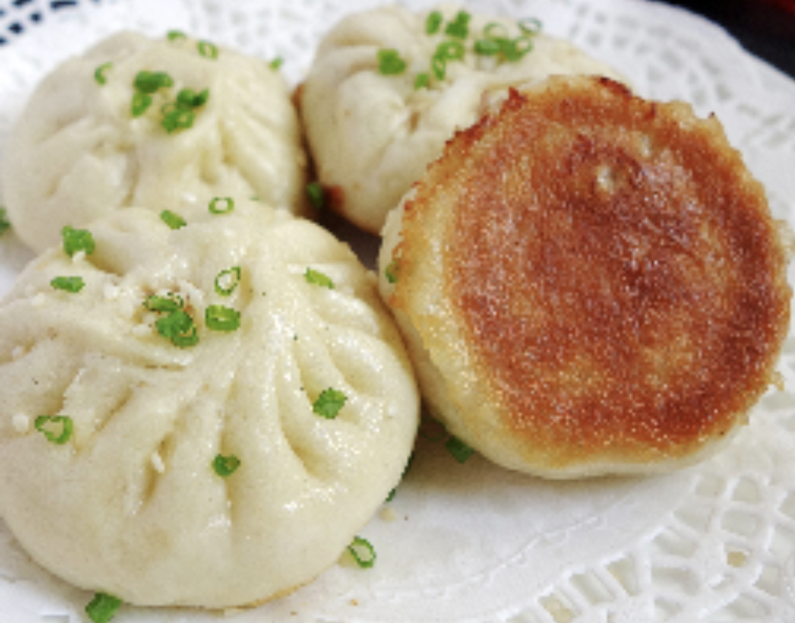

#30 - PAN-FRIED PORK BUN - 生煎包
This is a very popular Shanghainese dim sum. The Chinese name生煎包, which literally translated to “raw pan-fried bun”. You are supposed to pan-fry the raw buns to golden crispy on bottom, soft on the top and juicy inside. Unfortunately, most
restaurants pre-steam the buns before gently brown the bottom before serving which yields an inferior dish.

INGREDIENTS:
Dough:
- 160g cake (low gluten) flour
- 1 TBSP sugar
- 4g (1 tsp) baking powder
- 90ml warm water (45ºC)
- 2g ½ tsp yeast
Stuffing:
- 120g minced pork
- 1 tsp Grated ginger
- 1 Green onion, chopped
Seasoning:
- ¼ tsp salt
- ¼ tsp Shaoxing wine
- ½ tsp dark soy sauce
- 1 TBSP potato starch
- 1 tsp sugar
- White pepper
- 4 TBSP water
- 2 tsp vegetable oil
- ½ tsp sesame oil
Garnish:
- Toasted sesame seed
- Chopped green onion
Directions:
- Put the yeast into the warm water. Let it sit for 5 minutes to activate.
- Put all the ingredients in stuffing into a bowl; add in all the seasoning (except the water, oil and sesame oil).
- Using chopsticks, stir the minced meat vigorously in circular motion until it becomes sticky pasty consistence.
- Add in 1 TBSP of water into the meat, stir vigorously again in circular motion until it becomes sticky pasty consistence.
- Repeat step 4 until all the water is incorporated into the meat.
- Add in the vegetable oil; mix gently, then the sesame oil. Set aside.
- Mix cake flour, sugar and baking flour in a bowl. Pour in the yeast and water mixture.
- Mix well, and then knead by hand until the dough is smooth and a bit shiny on the outside(about 3-5min).
- Test to see if the dough is ready by cutting it with a knife. The dough is ready if the cut surface is smooth.
- Divide the dough into 12 equal portions (approx. 20g each).
- Press each piece flat. Use a rolling pin, roll the dough out into a 3 ½ - 4 inch circle.
- Roughly, divide the meat stuffing into 12 equal portions by drawing lines in it.
- Put one portion of the meat onto a rolled-out dough. While turning the dough, squeeze it close, leaving no opening on the top. Repeat for the rest of the dough.
- Put the finished bun on a floured baking sheet and cover with a towel. Put the baking sheet in a warm place for 30-40 min to let it rise.
- Heat a frying pan (preferably cast iron) with ¾ cup water and 1 TBSP oil. When the water boils, line the buns in a single layer on the frying pan without touching each other.
- Cover the lid and let it cook for 7-8 minutes.
- Uncover the lid and let the excessive water evaporate.
- Add another 2 TBSP oil between the buns.
- It is done when all the water is evaporated and the bottom of the bun is golden brown.
- Put the buns onto a serving plate. Garnish with toasted sesame seed and chopped green onion.
(Serves 1 person)
Note:
- Can use all-purpose flour if you don’t have cake flour.
- The yeast is alive if it foams up after a few minutes in the water.
- Serve with your favorite hot sauce, Zhenjiang vinegar鎮江醋, or Worcestershire sauce.